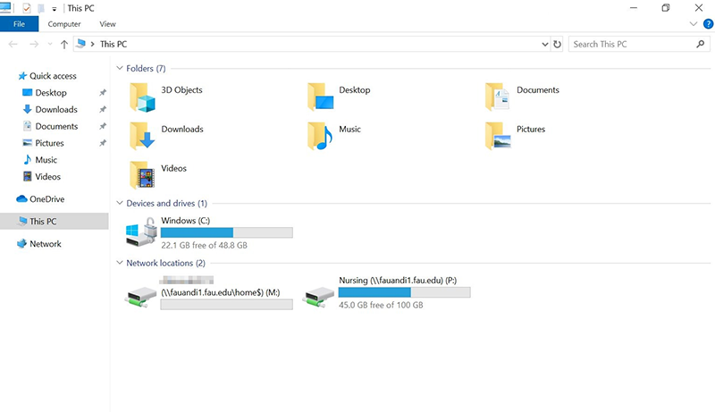
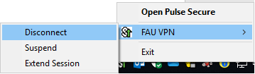

Instructions and Training
The FAU VPN service allows approved faculty and staff to access certain secure on-campus resources. The VPN supports Windows 7, 8.1 and 10 (32bit and 64bit), Mac OSX 10.12 and later, Android 7.0 or later, and Apple iOS 12 or later. If you would like to request VPN access, please open a service request at the FAU Help Desk http://helpdesk.fau.edu or call 561-297-3999.
-
Once you have been connected to the FAU VPN connection above using PulseSecure click the
This PC
shortcut on your desktop.

-
Once you have done this the Windows Explorer will open displaying the network locations you area able to access.

-
Click the
Connect
button to start the VPN connection to FAU

-
After you press the
Connect
button, enter your FAUNet ID and Password then select “Connect.”

-
After you select
Connect
for the image above you will be prompted to input a Secondary Password. FAU VPN requires you to be enrolled in two-factor Authentication (Duo.) When you are prompted for the secondary password, you will select any of the following options depending on how you initially set up Duo on your account:
- - Type push into the secondary password field and press enter to push an authentication request to your phone or tablet if you are using the smartphone application.
- - Type sms into the secondary password field to have a code sent to you via text message. (You will enter the code once the dialog prompts you again.)
- - Type phone into the secondary password field to receive a phone call to confirm the authentication request.

-
If your system is in compliance for access, you will be connected to the FAU VPN and should see a green check mark next to your connection.

-
In your task bar right click the PulseSecure icon.

-
Once you have right clicked the icon, hover your mouse over
FAU VPN
then left click 'Disconnect'

-
Once the application is open left click the
Disconnect
button to disconnect.

If you require more assistance on PulseSecure, connecting to network drives or if you have any questions about it, please send an email to jsingh@health.fau.edu.